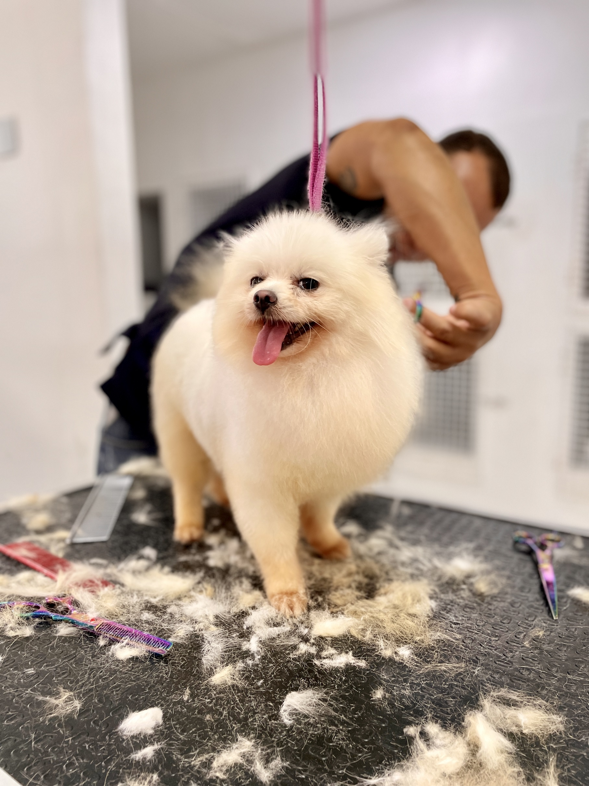
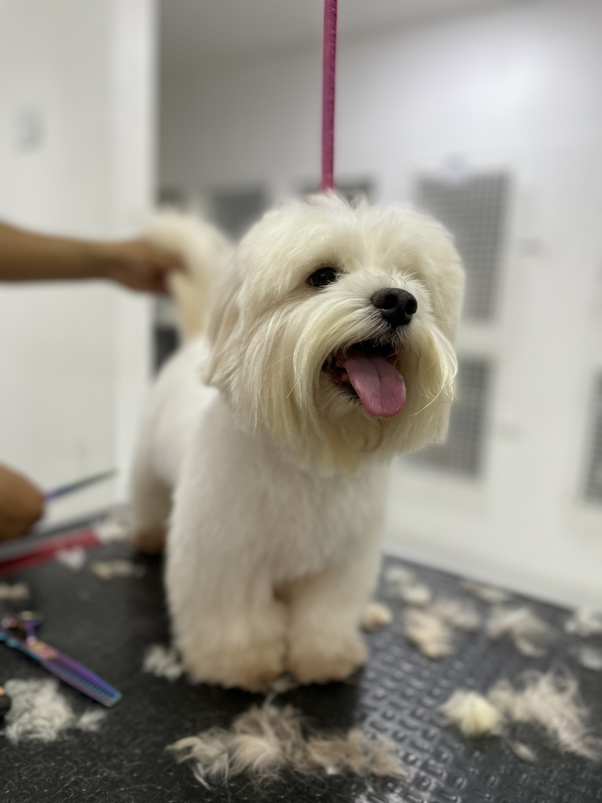
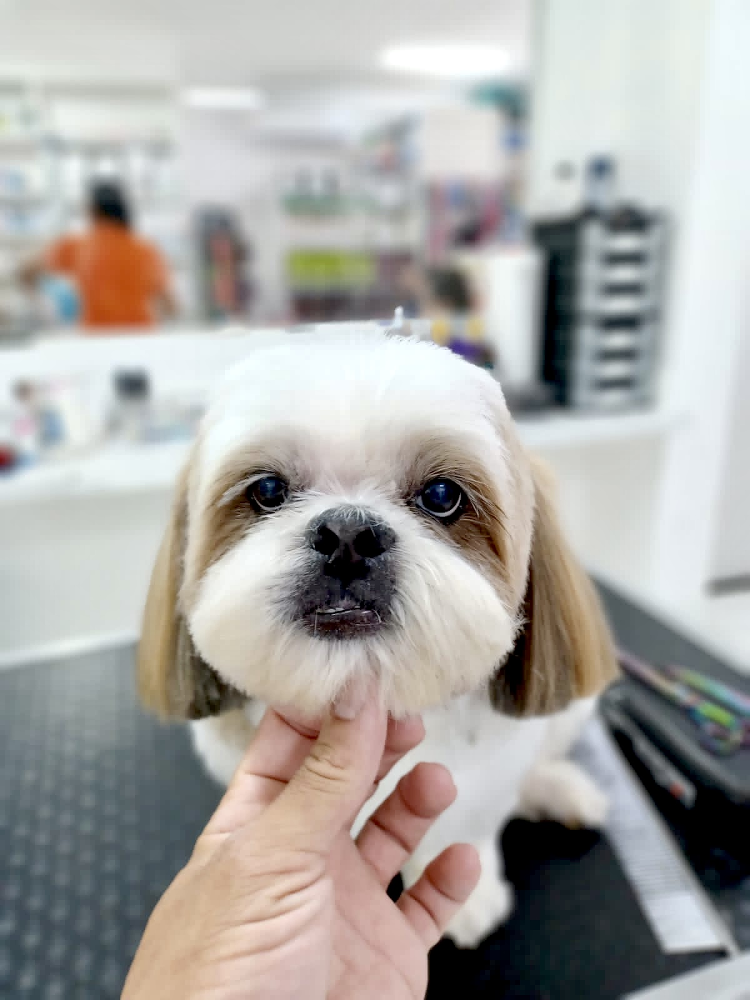

Estacionamento gratuito

Profissionais especialistas

Exames, consultas e internação

Farmácia, ração e acessórios
SEU PET SEMPRE LINDO!



PERGUNTAS FREQUENTES
Para filhotes, são recomendadas consultas mensais até que atinjam os seis
meses de idade. O médico veterinário avaliará o desenvolvimento e o estado
geral de saúde do animalzinho e iniciará o protocolo de vacinação e
vermifugação. Caso seu pet tenha entre 1 a 7 anos, as suas consultas
podem ser realizadas anualmente. Nelas será feito um check-up completo, o
reforço das vacinas e uma avaliação da saúde do animal. Os animais idosos
devem ser acompanhados regularmente e, por isso, são recomendadas
consultas semestrais para os nossos velhinhos.
O seu pet vai receber o calendário da vacinação ao fazer a consulta com
nossos médicos. Nele você verá o período correto para todas as vacinas
obrigatórias e também as que são recomendadas para cada caso específico.
Geralmente o período de maturidade sexual dos pets se dá entre 6 a 12
meses, mas apenas o médico veterinário poderá dar a indicação correta para
a castração ou esterilização de seu pet.
A Pet Líder Natal conta com mais de 25 especialidades entre cirurgia geral,
clínico geral, dermatologista, nefrologista, cardiologista, fisioterapia,
oftalmologista, ortopedista, ultrassonografista, nutróloga, entre outros. Além
disso, contamos com internação e farmácia 24h.